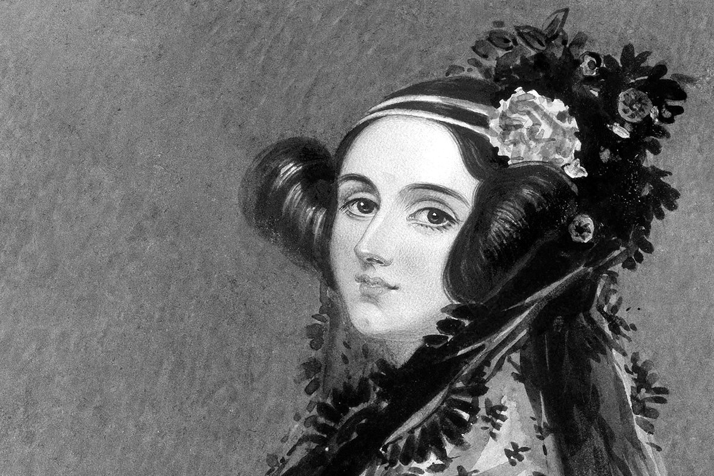

Ada Lovelace: Pioneira da Programação e Visão Além de seu Tempo

...
Ada Lovelace, nascida em 1815, foi uma matemática e escritora britânica que se destacou como a primeira
programadora de computador da história. Com uma mente analítica e criativa, ela colaborou com Charles
Babbage em sua máquina analítica e produziu o primeiro algoritmo especificamente projetado para ser
executado por uma máquina. Seu trabalho visionário abriu caminho para a era da computação e a tornou uma
figura inspiradora para futuras gerações de mulheres na ciência e tecnologia.
Algoritmo para a Máquina Analítica
Lovelace desenvolveu o primeiro algoritmo conhecido para ser executado em uma
máquina, antecipando o conceito de programas de computador. Seu trabalho pioneiro na Máquina
Analítica de Babbage
estabeleceu os fundamentos da programação moderna.
Visão da Capacidade dos Computadores
Ada Lovelace foi além da mera funcionalidade das máquinas e previu que os
computadores poderiam ser utilizados para além do cálculo matemático. Ela vislumbrou seu
potencial para criar
música, arte e gerar pensamentos criativos.
Compreensão da Lógica Computacional
Lovelace percebeu a importância da lógica em relação à máquina analítica. Ela
reconheceu que os algoritmos poderiam ser aplicados para solucionar problemas complexos, sendo
um marco fundamental
para a compreensão da ciência da computação moderna.
Você pode saber mais sobre a vida de Ada clicando aqui.